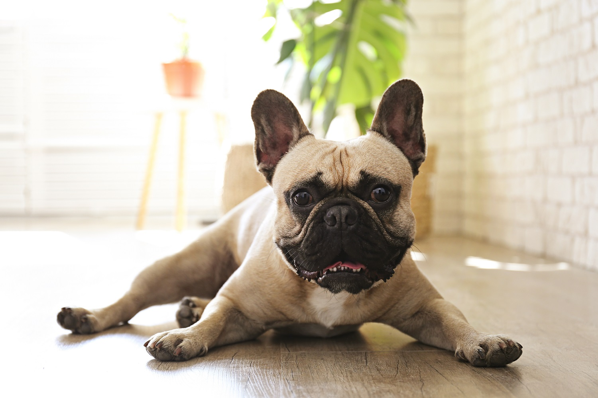

Pochodzenie:
- Buldogi mają swoje korzenie w Anglii, sięgające XV wieku.
Wygląd Fizyczny:
- Buldog to pies o średniej wielkości z solidną budową ciała.
- Wyróżnia się charakterystycznym krótkim pyskiem, fałdami skórnymi na twarzy i krótką sierścią.
Kolor Sierści:
- Buldogi występują w różnorodnych kolorach, takich jak rudy, biały, pręgowany czy płowy.
Charakter i Temperament:
- Buldogi są znane z przyjaznego i oddanego charakteru.
- Chociaż mogą być nieco leniwe, to jednocześnie są energiczne i ciekawskie.
Aktywność Fizyczna:
- Mimo że buldogi nie są najbardziej aktywnymi psami, regularna aktywność jest ważna dla utrzymania zdrowia.
Zastosowanie:
- Buldogi często pełnią rolę wspaniałych towarzyszy domowych, dzięki swojemu spokojnemu temperamentowi.
Hodowla i Popularność:
- Buldogi są hodowane z dbałością o zdrowie i charakter.
- Są jedną z popularnych ras, cenioną za swoje unikalne cechy i przywiązanie do właścicieli.